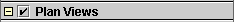
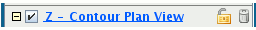
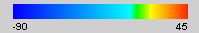

The Display Legend
When a display is created, an entry for it is added into the legend
panel. There are two types of legends, side and bottom, that you can use to
show the displays that are in a view. You can define which type of legend
should be used. The side legend, shown below, is the default legend style.
[ht::cimg images/SideLegend.gif]
Main features of the side legend are:
- Display Categories Each display has a Display Category
 that allows
grouping of similar displays. The category can be changed as
we saw in the previous exercise. Each category label includes a
toggle button for collapsing
 or
expanding
or
expanding  the category details
as well as a visibility checkbox
for toggling the
visibility of all displays in this category.
the category details
as well as a visibility checkbox
for toggling the
visibility of all displays in this category.
- Display Legends Each display has it's own legend
[ht::cimg images/SideLegendDisplay.gif]
consisting of the following parts:
- A label for each display 
The label includes:
- A toggle button for collapsing
or expanding
the display details
- A visibility checkbox
for toggling the visibility of this display,
- The name of the display .
Left clicking on this will bring up the the
display's control window. Right clicking will bring up the
control menu. The name of the display can be changed through
labels through the [ht::dialog Display Control Properties]
editor ([ht::menu Edit Properties]).
- The drag-and-drop icon
 which
can be used to move the control to a different
Display Category or to a different View window.
which
can be used to move the control to a different
Display Category or to a different View window.
- A visibility toggle lock
 which
locks/unlocks the toggling of visibility for this display.
[ht::visibility]
which
locks/unlocks the toggling of visibility for this display.
[ht::visibility]
- A remove button [ht::img %dotpath%images/Remove16.gif] for
removing the display from the view window.
- Extra descriptive information about the display.
This may include
the full name of the parameter and ancillary information
like the vertical level. You can add your own extra legend
labels through the [ht::dialog Display Control Properties]
editor ([ht::menu Edit Properties]).
- Color bar  (optional) -
for colored displays, shows the color table being used and
the range that the colors span. Right clicking on the
color bar brings up a menu for changing the color table.
Things you can do with the side legend:
- Toggle visibility - Uncheck the visibility toggle
checkbox to make the display invisible. Click again to set
it visible.
- Change the color table - Right click on the legend color
bar to bring up the color bar menu.
- From the menu, select the [ht::menu Solid Yellow]
menu item.
- Show the Display Control Window -
Right click on the display label to bring up the
display control menus. These menus are the same as those
accessible through the control window. Select the
[ht::menu {Control Window}] menu item to bring the
control window to the foreground.